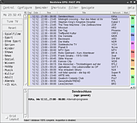

nxtvepg
Archivierte Anleitung
Dieser Artikel wurde archiviert, da er - oder Teile daraus - nur noch unter einer älteren Ubuntu-Version nutzbar ist. Diese Anleitung wird vom Wiki-Team weder auf Richtigkeit überprüft noch anderweitig gepflegt. Zusätzlich wurde der Artikel für weitere Änderungen gesperrt.
Zum Verständnis dieses Artikels sind folgende Seiten hilfreich:
NexTView ist zentraleuropäischer Standard für einen EPG (elektronischen Programmführer), der über das Teletext-/Videotext- sowohl im analogen wie im digitalen TV-Signal übertragen wird. Mit der nexTView EPG-Dekodersoftware  lassen sich diese Daten auswerten und in das xmltv-Format exportieren.
lassen sich diese Daten auswerten und in das xmltv-Format exportieren.
Hinweis:
nxtvepg ist nicht in der Lage, digitale EPGs zu dekodieren, kann also nicht mit DVB verwendet werden!
Installation¶
Die nexTView EPG-Dekodersoftware ist in der Version 2.7.6 in den offiziellen Paketquellen enthalten und kann hierüber installiert [1] werden:
nxtvepg (universe )
 mit apturl
mit apturl
Paketliste zum Kopieren:
sudo apt-get install nxtvepg
sudo aptitude install nxtvepg
Fremdpaket¶
In den offiziellen Paketquellen sind nur Pakete für Ubuntu 10.04 enthalten. Über die Downloadseite  kann jedoch ein Fremdpaket heruntergeladen werden. Alternativ kann auch der Quellcode kompiliert werden.
kann jedoch ein Fremdpaket heruntergeladen werden. Alternativ kann auch der Quellcode kompiliert werden.
Hinweis!
Fremdpakete können das System gefährden.
Einrichtung¶
Zuerst muss nxtvepg so eingerichtet werden, dass es auch die richtigen Fernsehsender findet, die in Deutschland die EPG-Informationen ausstrahlen. Dazu muss die grafische Oberfläche (GUI) gestartet werden. Dazu startet man ein Terminalfenster [2] und gibt folgenden Befehl ein:
nxtvepg
Anschließend startet man über "Configure -> Provider Scan -> Start scan" den Suchlauf nach EPG-Sendern. Nach dem Scan sollte sich das Fenster mit Sendungen füllen. Somit ist nxtvepg eigentlich ausreichend konfiguriert.
Hinweis:
In diesem Wiki ist öfters vom Verzeichnis .nxtvepg im eigenen Homeverzeichnis die Rede. Bei manchen Versionen heißt dieser Ordner allerdings .nxtvdb. In dem Fall ist dieser Ordner zu verwenden.

Export¶
Nun müssen die EPG-Daten als XML exportiert werden. Dieses Format kann von xmltv-kompatiblen Programmen anschließend eingelesen werden. Dazu öffnet man im Nextview-Menü "Control -> Export as XMLTV...". Als Speicherort wählt man das Verzeichnis .nxtvepg aus dem eigenen Homeverzeichnis und als Dateinamen listings.xml.
Automatisieren¶
Nun wäre es sehr aufwendig, die Daten des EPGs manuell auf dem aktuellen Stand zu halten; dies lässt sich mit einem Cronjob automatisieren.
Schritt eins dazu ist, beim Start des Computers Nextview EPG als Daemon zu starten. Da Nextview keine Skripte mitbringt, um direkt aus den Runlevels heraus gestartet zu werden, macht es Sinn das Programm über das Skript /etc/init.d/bootmisc.sh zu starten, da der Inhalt dieses Skriptes bei jedem Bootvorgang ausgefüht wird. Man fügt also an das Ende dieser Datei (jedoch noch vor exit 0) in einem Editor [3] mit Root-Rechten [4] folgende Zeilen an:
1 2 | ## EPG Starten su BENUTZERNAME -c "/usr/bin/nxtvepg -daemon" |
BENUTZERNAME muss dabei gegen den Benutzer ausgetauscht werden, unter dem nexTView laufen soll. Am sinnvollsten ist es den Benutzer zu wählen, mit dem Nextview EPG bereits konfiguriert wurde.
Nextview wird also beim Systemstart als Daemon ausgeführt und sammelt im Hintergrund fleißig die EPG-Daten ein. Diese müssen jedoch noch regelmäßig in die listings.xml wandern. Über einen Cronjob werden nun stündlich (täglich, oder wie immer man will), die EPG-Daten ins XML-Format konvertiert.
Dazu muss ein Skript mit einem Editor [4] erstellt werden:
1 2 | #!/bin/bash
/usr/bin/nxtvepg -provider d92 -dump xml > ~/.nxtvepg/listings.xml
|
Dies speichert man z.B. als update-epg im Verzeichnis .nxtvepg des eigenen Homeverzeichnisses ab. Möchte man die XMLTV-Daten in einer Anwendung verwenden, in der sich für die Zeitzone kein Offset einstellen lässt (z.B. bei OnTV), kann es sinnvoll sein, gleich mit der Option xml5ltz statt xml die Uhrzeiten für die lokale Zeitzone zu exportieren.
Hinweis:
Die drei Zeichen identifizieren den nexTView Provider  - "man nxtvepg" sagt: -provider CNI Select a provider by its hexadecimal CNI (Country and Network Identifier), e.g. -provider d92 for Kabel1. You can find out the provider's CNI during a provider scan or from the database file names. Use the code FF for the merged database (in the last used configuration as saved in the rc/ini file). Man könnte also auch "FF" wählen, um die beiden EPG-Daten von RTL2 und Kabel1 zusammenzufügen, doch damit kann es zu Problemen kommen, da die Sendernamen von beiden Quellen unterschiedlich sind.
- "man nxtvepg" sagt: -provider CNI Select a provider by its hexadecimal CNI (Country and Network Identifier), e.g. -provider d92 for Kabel1. You can find out the provider's CNI during a provider scan or from the database file names. Use the code FF for the merged database (in the last used configuration as saved in the rc/ini file). Man könnte also auch "FF" wählen, um die beiden EPG-Daten von RTL2 und Kabel1 zusammenzufügen, doch damit kann es zu Problemen kommen, da die Sendernamen von beiden Quellen unterschiedlich sind.
Nun muss das neu erstellte Skript noch ausführbar gemacht werden [3]:
chmod +x ~/.nxtvepg/update-epg
Schließlich und endlich fehlt nur noch ein Cronjob, der den Export automatisch aufruft:
crontab -e
öffnet den im System eingestellten Standardeditor mit der Crontabelle für den aktuellen User. Dort fügt man dann folgenden Text ein, um den EPG z.B. zu jeder Stunde zu aktualisieren.
## EPG stuendlich Updaten 0 * * * * ~/.nxtvepg/update-epg
Von nun an sollten immer die aktuellen EPG-Daten für xmltv-basierte Anwendungen zur Verfügung stehen. Wenn man gerade fernsieht und den Sender wechselt, kann Nextview EPG seine Daten nicht mehr aktualisieren.
Problembehebung¶
Kompilieren aus dem Quellcode¶
Möchte man eine aktuelle Version von der Downloadseite selbst kompilieren, erhält man unter Umständen folgende Fehlermeldung:
"/usr/lib/tcl8.x is not a valid Tcl/Tk library directory".
Der Pfad der Bibliotheken ist unter Ubuntu ein anderer. Im makefile ändert man den Pfad wie folgt:
## Falscher Pfad TK_LIBRARY_PATH = /usr/lib/tk$(TCL_VER) TCL_LIBRARY_PATH = /usr/lib/tcl$(TCL_VER) ## Korrekter Pfad TK_LIBRARY_PATH = /usr/share/tcltk/tk$(TCL_VER) TCL_LIBRARY_PATH = /usr/share/tcltk/tcl$(TCL_VER)
Tcl/Tk 8.5 wie für die Version 2.8.1 empfohlen ist in den Paketquellen von Ubuntu enthalten.
 Programmübersicht
Programmübersicht- Erstellt mit Inyoka
-
 2004 – 2017 ubuntuusers.de • Einige Rechte vorbehalten
2004 – 2017 ubuntuusers.de • Einige Rechte vorbehalten
Lizenz • Kontakt • Datenschutz • Impressum • Serverstatus -
Serverhousing gespendet von